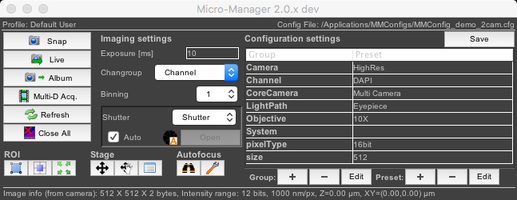
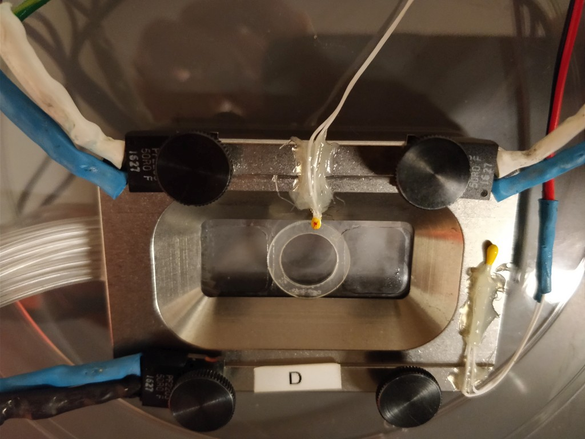

Software control of microscopes, perspective of a cell biologist


Janelia 2020, Nico Stuurman, Vale lab, UCSF/HHMI
github.com/nicost/reveal.js branch: janelia2020

Building out an idea (2005)

- de novo (C, Java, Pyton)
- use Toolboxes (Matlab, Labview)
- commercially-written
Free, Open Source, Extensible, Cross-Platform

Nenad Amodaj
Needed working proto-type fast
Nenad Amodaj


Supported by the Sandler Foundation
Diggin into device adbstraction
API understood by device driver developers > many contributionsUser Interface development
Back and forth with the labSupport: interact!
Website, mailing list, githubμManager - Open Source Software For Microscopes


- Supports devices from >150 vendors
- Code contributions from >100 authors
- >40,000 registered users, >6,000 microscopes
- >5,000 mentions (G Scholar), cited >1,600 times
diSPIM: μManager as user interface

Hari Shroff (NIH)
diSPIM: μManager as user interface

Jon Daniels (ASI)

diSPIM: Live tissue imaging

Kara McKinley
Organoid cell biology

https://valelab.ucsf.edu/~nico
doi: 10.7554/eLife.36739
diSPIM: Live tissue imaging
9 day old mouse embryo, Arl31b-GFP
(Markus Delling, UCSF)
(Markus Delling, UCSF)
Nagging questions...
- Open Source, great, but...
- Rewarding/funding of tool deployment (versus development)
- Scattered tools: inefficiency or diversity?
- Is this the best way to empower scientists?
What is the best structure for a project like Micro-Manager?